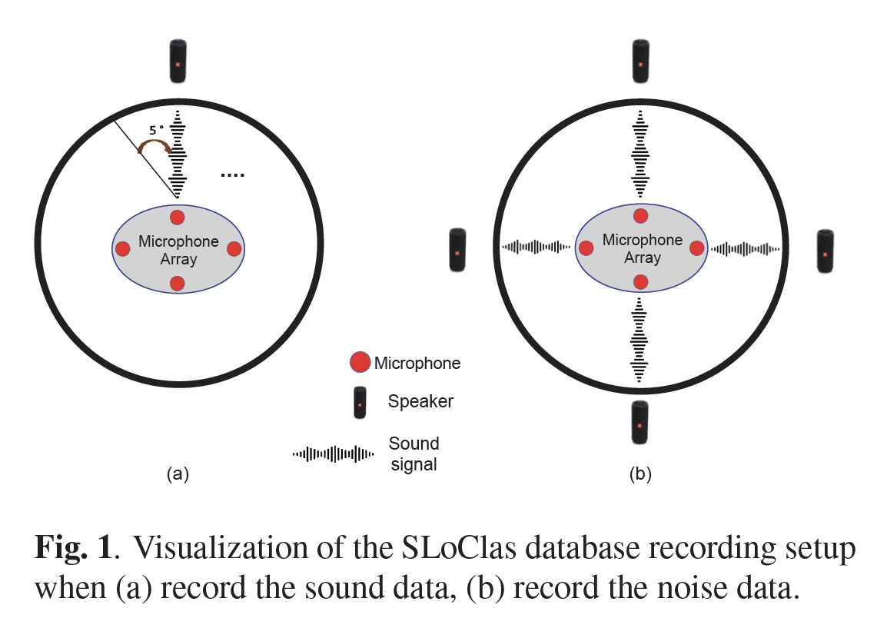
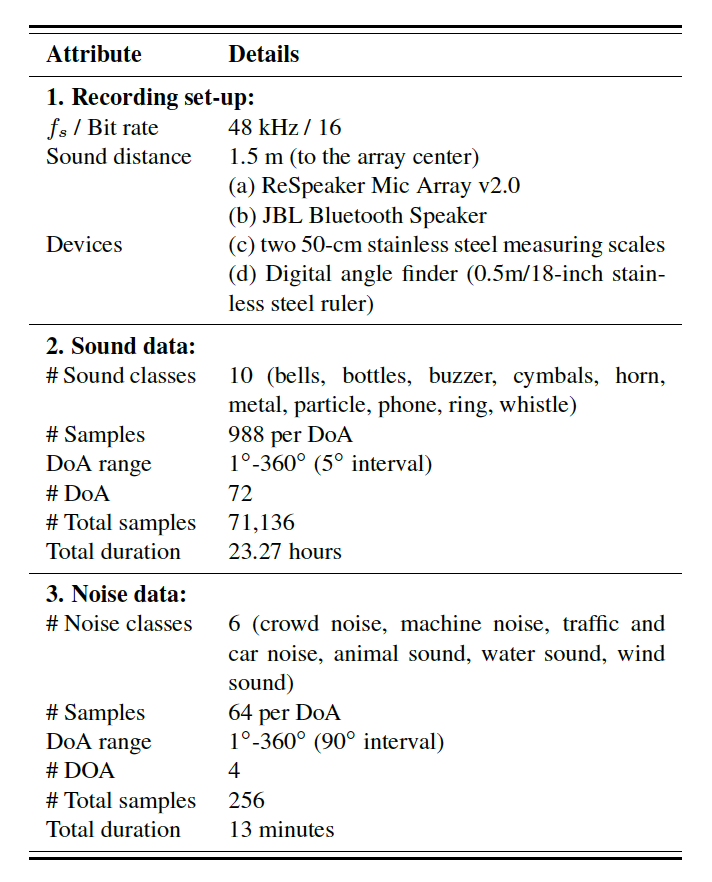
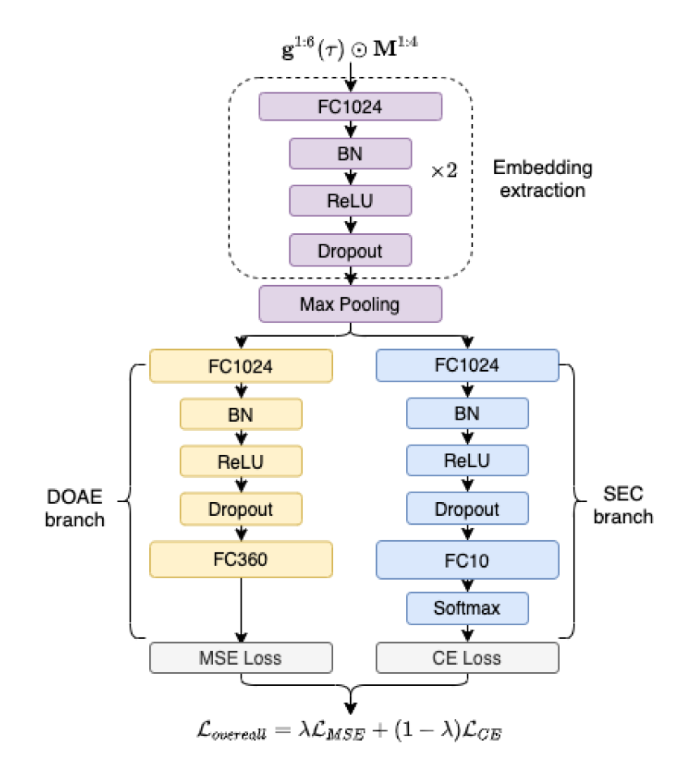

We present the development of a new database, namely Sound Localization and Classification (SLoClas) corpus, for studying and analyzing sound localization and classification. The corpus contains a total of 23.27 hours of data recorded using a 4-channel microphone array. 10 classes of sounds are played over a loudspeaker at 1.5 meters distance from the array by varying the Direction of Arrival (DoA) from 1 degree to 360 degree at an interval of 5 degree. To facilitate the study of noise robustness, 6 types of outdoor noise are recorded at 4 DoAs, using the same devices. Moreover, we propose a baseline method, namely SLCnet and present the experimental results and analysis conducted on the collected SLoClas database. We achieve the accuracy of 95.21% and 80.01% for sound localization and classification, respectively. We publicly release this database and the source code for research purpose. We release this database to the public for research activities.
Applications
- Joint framework for sound localization and sound event classification
Reference
Please refer the following paper if you use this database
Bidisha Sharma, Xiaoxue Gao, Karthika Vijayan, Xiaohai Tian, and Haizhou Li. "NHSS: A Speech and Singing Parallel Database." arXiv preprint arXiv:2012.00337 (2020). https://arxiv.org/abs/2012.00337
@article{sharma2020nhss,
title={NHSS: A Speech and Singing Parallel Database},
author={Sharma, Bidisha and Gao, Xiaoxue and Vijayan, Karthika and Tian, Xiaohai and Li, Haizhou},
journal={arXiv preprint arXiv:2012.00337},
year={2020}
}
Recording setup for SLoClas database

Details of the SLoClas 2021 database in recording set-up, sound data, and noise data

The proposed SLCnet architecture
